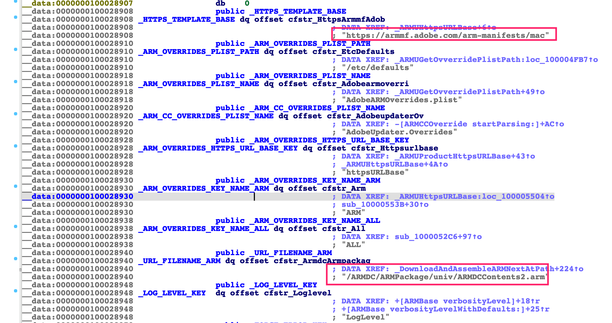
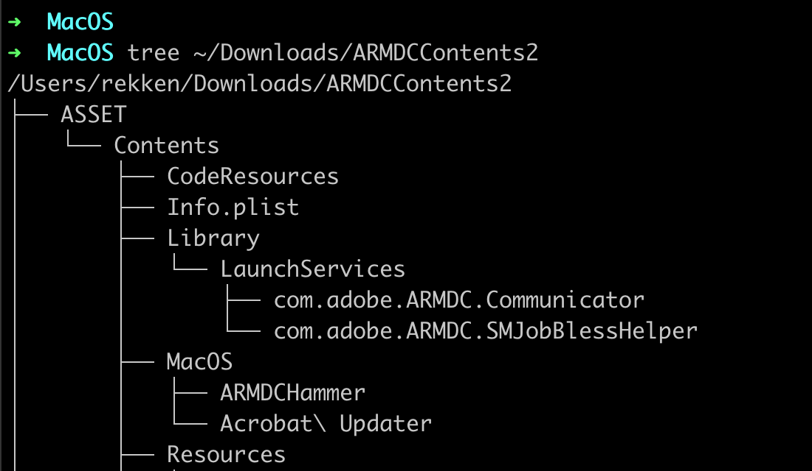

Yuebin Sun(@yuebinsun2020) of Tencent Security Xuanwu Lab
0x0 Summary
Today, Adobe Acrobat Reader DC for macOS patched three critical vulnerabilities(CVE-2020-9615, CVE-2020-9614, CVE-2020-9613) I reported. The only requirement needed to trigger the vulnerabilities is that Adobe Acrobat Reader DC has been installed. A normal user on macOS(with SIP enabled) can locally exploit this vulnerabilities chain to elevate privilege to the ROOT without a user being aware. In this blog, I will analyze the details of vulnerabilities and show how to exploit them.
0x1 Background
The root process has superpowers, it almost can do anything, reading/writing all sensitive files/databases such as Images/Calendars. However in modern macOS, root processes outside of sandbox are rare, most macOS built-in services run within a sandbox. They are no longer the king, they imprison themselves in a cage based on declarative sandbox profile rules.
Good news, popular software with high privileged services are new good target in addition to macOS built-in services, so Adobe Acrobat Reader DC catch my attention.
0x2 Analysis
com.adobe.ARMDC.SMJobBlessHelper within /Library/PrivilegedHelperTools/ is one of the components of Adobe Acrobat Reader DC, responsible for software updating. It runs as root and no-sandbox are applied, and hosts an XPC service named SMJobBlessHelper(com.adobe.ARMDC.SMJobBlessHelper). Most XPC services will check its connection client before doing any actual work, so does SMJobBlessHelper.
Vulnerability 1: Bad Checking of NSXPC Connection Client
SMJobBlessHelper is based on NSXPC, its client checking exists in [SMJobBlessHelper listener:shouldAcceptNewConnection:]. The checking logic is as pseudo-code shows below, gets the client’s PID, and then obtains Bundle ID based on the client’s process path, the client will be trusted if its Bundle ID is “com.adobe.ARMDC”.
1 | pid = [NSXPCConnection processIdentifier]; |
But what is NSBundle, can we trust it?
Apple says it is “A representation of the code and resources stored in a bundle directory on disk.”, so it’s just a directory structure with some well-defined subdirectories/files. The bundle ID is obtained from Contents/Info.plist of the directory structure.
The directory structure is certainly not credible, we can forge any Bundle ID by creating our special bundle directory.
Vulnerability 2: Temp Directory Root Protection Can Be Bypassed
As the pseudo below show, in the updating process before SMJobBlessHelper launch ARMDCHammer, download folder(in bundle’s parent directory) will be moved to /var/folders/zz/xxxxx/T/. Unfortunately after directory moving, the owner of “/var/folders/zz/xxxxx_n0000000000000/T/download” is the root, and normal user DO NOT have access to it. So it means that we can not change it and its subfiles any more.
1 |
|
But, the designer may forget the symlink.
If ./download/ARMDCHammer is a symlink, after being moved to /var/folders/zz/xxxxx/T/download, does the symlink still be valid?
Yes, the symlink is still valid, it can help us to bypass temp directory protection. I can force /var/folders/zz/xxxxx/T/download/ARMDCHammer to link to anywhere.
Vulnerability 3: validateBinary and launchARMHammer Has a Race Condition window
With the help of vulnerability 2, we can force validateBinary() to check /tmp/test/hello_root.
The logic exists in [SMJobBlessHelper doWork].
1 | if (validateBinary("/tmp/test/hello_root")){ |
validateBinary and launchARMHammer all use program path, and we have writing permission to this path.
So if we can replace the “/tmp/test/hello_root” with our malicious file after validateBinary, launchARMHammer will launch our malicious process.
You may think the race condition window is too narrow to control, I will show the tricks later.
0x3 Exploitation
Bypass Checking of NSXPC Connection Client
As explained before, NSBundle is not trusted, so we try to forge an NSBundle, with its bundle id is “com.adobe.ARMDC”. For saving time, we copy Adobe’s original bundle from “/Library/Application Support/Adobe/ARMDC/Application/Adobe Acrobat Updater.app”.
1 | echo "copy Adobe Acrobat Updater.app" |
Then compile our NSXPC Exploit client, copy it to Adobe Acrobat Updater.app/Contents/MacOS/
1 | cd /tmp/test/exploit |
Now, SMJobBlessHelper-Exploit, being launched as an NSXPC client, will pass through [SMJobBlessHelper listener:shouldAcceptNewConnection:]’s check.
Bypass Temp Directory Root Protection
1 | DoWorkAndLauchHammer(){ |
Symlink can help us, before SMJobBlessHelper moves our download directory, we create a symlink at our download directory.
1 | $ cd /tmp/test |
Then we trigger SMJobBlessHelper’s XPC interface, /tmp/test/exploit/download is moved to /var/folders/zz/xxxxx/T/download.
Now, we can see symlink in /tmp/test/exploit/download/ is still pointing to /tmp/test/hello_root.
1 | $ sudo ls -l /var/folders/zz/xxxxx/T/download |
So, with the help of symlink we change checking logic:
1 | DoWorkAndLauchHammer(){ |
Find a Valid ARMDCHammer to Meet validateBinary’s Requirement
validateBinary use built-in codesign command to check if /var/folders/zz/xxxxx/T/download/ARMDCHammer is valid or not.
1 | validateBinary("/var/folders/zz/xxxxx/T/download/ARMDCHammer"); |
The parameters passed to codesign are as below:
1 | (lldb) po $rcx |
Where can we find the valid ARMDCHammer?
I write a script, which searches the full local disk for ARMDCHammer, and finally gain nothing. But it must exist, isn’t it?
Since it is not on the local drive, it should have been downloaded on demand. I reverse a lot of binary files and found the cute download URL in Acrobat Update Helper.app. Downloading and extracting the archive, in the end, I catch the ARMDCHammer I’m looking for.


1 | $ codesign --verbose --verify -R="identifier ARMDCHammer and anchor trusted and anchor apple generic and certificate leaf[subject.CN] = \"Developer ID Application: Adobe Systems, Inc. (JQ525L2MZD)\"" ~/Downloads/ARMDCContents2/ASSET/Contents/MacOS/ARMDCHammer |
Race Condition Between validateBinary and launchARMHammer
The time window between validateBinary and launchARMHammer is narrow. OPLock can help us to freeze time in Windows, unfortunately, there are no alternatives like that in macOS.
1 | DoWorkAndLauchHammer(){ |
We split our works into three parts, each part uses a separate thread.
Thread 1: Circularly replace files frequently
Symlink in /var/folders/zz/xxxxx/T/download point to /tmp/test/hello_root, so we replace it circularly.
1 | Step 1: move /tmp/test/ARMDCHammer to /tmp/test/hello_root， |
Thread 2: Prepare download directory and symlink frequently
1 | Step 1: create /tmp/test/orig_download directory, create symlink /tmp/test/orig_download/ARMDCHammer pointing to /tmp/test/hello_root |
Thread 3: Trigger NSXPC DoWorkAndLauchHammer interface
1 |
|
The reason we need Thread 1 is obvious, why we need separate Thread 2 and Thread 3?
High-frequency NSXPC interface call requests which make the server busy can increase the probability of success. With multi-threads running, the race condition needs a very short time. In my test, most test cases need only 1~3 seconds, and the best case only takes a blink of time.
0x4 Demo
(Safari may not play the gif automatically, recommend to use Chrome or Firefox)

0x5 Patch
The most important part of the vulnerability patch is adding a new function named -[SMJobBlessHelper validatePaths], before validateBinary and launch, it checks the path is a symlink or not. It breaks the only way which must be passed.
1 | bool -[SMJobBlessHelper validatePaths](path){ |
0x6 Conclusion
In this blog, I analyzed the three logic vulnerabilities in Adobe Acrobat Reader and show how to exploit them to gain root without sandbox limitation. As an almost per-device required software, its security matters to macOS.
Ping me(@yuebinsun2020) if you have any questions.
Thanks to R3dF09(@R3dF09) for help in the analysis.